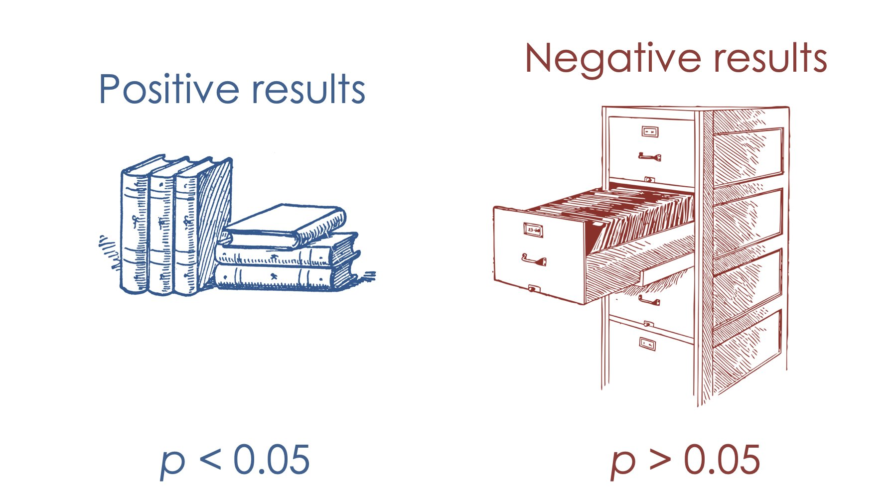
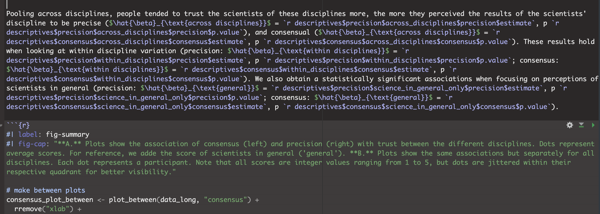
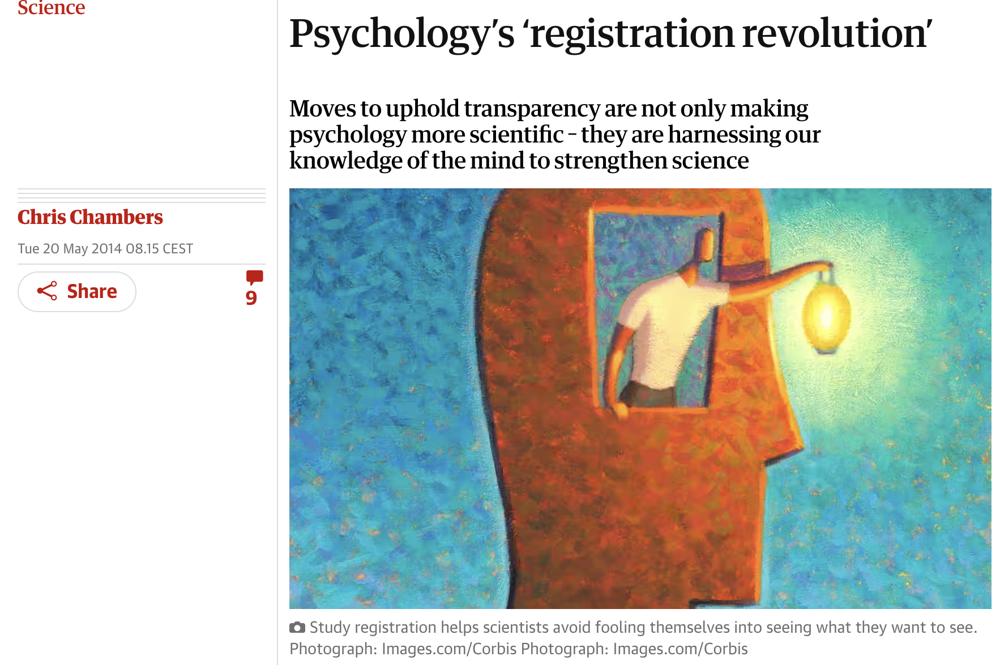

10:00
Scientific Publishing and the Replication Crisis
Overview
On the whole science works
Replication Crisis
Reproducibility
Replicability
- P-Hacking
- File-drawer effect
- How to do better science?
- Reproducible manuscripts
- Preregistrations
On the whole science works

If I have seen further than others,
it is by standing upon the shoulders
of giants.
— Isaac Newton
Science is cumulative
- Researchers build on each others findings
- This way, science is self correcting: If something doesn’t doesn’t turn out to be right, (at some point) other researchers will notice
(A typical textbook) pyramid of evidence

… but as great as science often is, it has some issues, and some are very structural
The replication Crisis
Reproducibility
When scientists can obtain the results of other scientists…
… using the same data and following the same methods
Would this ever not be the case?
Unfortunately, yes!
Replicability
When scientists can obtain the results of other scientists…
… collecting new data, following the same methods
Confusing!
The paper uses the word “reproducibility”, but in fact they replicated studies.
That is, they collected new data.
What has gone wrong? Is science a big fraud?
No! Fraud in science does happen, but it’s rare.
There are two main issues:
P-hacking
File-drawer effect
Your turn: P-hacking
Imagine you had run a fictional experiment (download the data here: imaginary_beatle_experiment.csv or from this week’s content page) to test whether listening to certain music affects people’s behavior or how they perceive themselves. In this fictional experiment, participants were randomly assigned to either:
Treatment group: Listened to “When I’m Sixty-Four” by The Beatles.
Control group: Listened to an instrumental jazz piece of similar length.
Afterwards, participants completed a battery of self-report measures and cognitive tasks.
Explore the dataset and look for any evidence that listening to “When I’m 64” had a significant effect on participants (tip, run regressions, you can even add covariates, look only at a subgroup of the data etc.)
Solution
# You could have tried for example to run this
model <- lm(actual_age ~ condition, data = imaginary_beatle_experiment)
summary(model)
Call:
lm(formula = actual_age ~ condition, data = imaginary_beatle_experiment)
Residuals:
Min 1Q Median 3Q Max
-9.675 -3.043 0.325 2.325 9.957
Coefficients:
Estimate Std. Error t value Pr(>|t|)
(Intercept) 25.6750 0.4665 55.04 <2e-16 ***
conditionControl -1.6321 0.6829 -2.39 0.0181 *
---
Signif. codes: 0 '***' 0.001 '**' 0.01 '*' 0.05 '.' 0.1 ' ' 1
Residual standard error: 4.172 on 148 degrees of freedom
Multiple R-squared: 0.03717, Adjusted R-squared: 0.03066
F-statistic: 5.713 on 1 and 148 DF, p-value: 0.0181A significant difference! But completely implausible.
Solution
This is how the data was generated:
# a function to simulate the data
simulate_phacking_data <- function(n = 150) {
tibble(
id = 1:n,
# simulate the experimental manipulation
condition = sample(c("Beatles", "Control"), n, replace = TRUE),
# all variables below are generate completely independently of the manipulation
actual_age = round(rnorm(n, mean = 25, sd = 4)),
gender = sample(c("Male", "Female", "Other"), n, replace = TRUE, prob = c(0.45, 0.45, 0.1)),
political_orientation = sample(1:7, n, replace = TRUE),
height_cm = round(rnorm(n, mean = 170, sd = 10)),
reaction_time_ms = round(rlnorm(n, meanlog = 6.5, sdlog = 0.3)),
mood_score = round(rnorm(n, mean = 5, sd = 1.5), 1),
memory_score = round(rnorm(n, mean = 10, sd = 3)),
confidence = sample(1:7, n, replace = TRUE),
perceived_age = actual_age + rnorm(n, mean = 0, sd = 2),
stress_level = round(rnorm(n, mean = 4, sd = 1.5), 1),
sleep_hours = round(rnorm(n, mean = 7, sd = 1.2), 1),
caffeine_intake_mg = round(rnorm(n, mean = 200, sd = 75)),
exercise_minutes = round(rnorm(n, mean = 30, sd = 15)),
social_media_minutes = round(rnorm(n, mean = 90, sd = 40)),
screen_time_hours = round(rnorm(n, mean = 5, sd = 2), 1)
)
}No true effect on any other variable.
Solution
And this is how the sample was picked:
# simulate until a data set returns a treatment
# effect on actual age of participants
set.seed(13487)
# Simulate multiple datasets and "p-hack" until p < .05
find_false_positive <- function(n = 10, max_tries = 10000) {
for (i in 1:max_tries) {
data <- simulate_phacking_data(n)
model <- lm(actual_age ~ condition, data = data)
p_val <- tidy(model) |>
filter(term == "conditionControl") |>
pull(p.value)
if (p_val < 0.05) {
cat("🔎 Found significant p =", round(p_val, 4), "on try", i, "\n")
return(data)
}
}
stop("❌ No significant result found within max_tries.")
}
# Example: Find a "lucky" false positive dataset
imaginary_beatley_experiment <- find_false_positive(n = 150)Re-sample until–by chance–a significant result pops up.
P-Hacking
Remember a p-value:
It’s the probability of observing an estimate at least as extreme as the one in our sample, in a world where there is no true effect (the Null world).
Remember statistical significance:
If p-value < 5% (arbitrary threshold)
We accept a 5% chance that our results could have occurred in a Null world.
P-Hacking
That means:
In a world where there is no effect, in 5% of (or 1 out of 20) samples, we find a false positive.
If we look at a different outcome variable, that’s basically taking a new sample.
If we measure 20 outcomes, in a world where there is no effect, we would expect 1 to yield a statistically significant effect.
To Illustrate how easy p-hacking is, the authors ran an RCT.
They found that listening to the classic Beatles song “When I’m Sixty-Four” makes people younger
(Yes, it literally reversed time)
- All analysis were using sound statistical methods and randomization
How did they achieve it?
- Just like you in the exercise: p-hacking
- They collected information about a number of characteristics of their study subjects, and then controlled for one that happened to give them the result they were looking at. (The age of the subject’s father).
- They also continued the experiment until they got a significant result, rather than predetermining the sample size.
File-drawer effect
Illustration from Calling Bullshit
Researchers are incentives to publish positive, statistically significant results.
But this can result faulty images of the evidence.
How bad is the issue?
Let’s take a step back
Assume that we have a “total Null world” (no true effect for no study in science)
| H₀ True (100%) | |
|---|---|
| Significant Finding (Positive result) α = 5%, 1−β = 80% | False Positive 5% |
| Non-Significant Finding (Negative result) 1−α = 95%, β = 20% | True Negative 95% |
Let’s take a step back
Now assume we live in a “total True world” (only true effects in all of science)
| H₀ True (0%) | H₁ True (100%) | |
|---|---|---|
| Significant Finding (Positive result) α = 5%, 1−β = 80% | 0% | True Positive 80% |
| Non-Significant Finding (Negative result) 1−α = 95%, β = 20% | 0% | False Negative 20% |
Now let’s assume a world where half of science tests true effects
For illustration, let’s assume science consists of n = 200 studies
| H₀ True (50%) | H₁ True (50%) | |
|---|---|---|
| Significant Finding (Positive result) α = 5%, 1−β = 80% | False Positive 5% × 50% = 2.5% (5 studies) | True Positive 80% × 50% = 40% (80 studies) |
| Non-Significant Finding (Negative result) 1−α = 95%, β = 20% | True Negative 95% × 50% = 47.5% (95 studies) | False Negative 20% × 50% = 10% (20 studies) |
And now let’s assume a world where only 5% of science tests true effects
In other words, we assume scientists generally test implausible hypotheses
| \(H_0\) True (95%) | \(H_1\) True (5%) | |
|---|---|---|
| Significant Finding (Positive result) \(\alpha = 5\%, 1-\beta = 80\%\) | False Positive 5% × 95% = 4.75% (9.5 studies) | True Positive 80% × 5% = 4% (8 studies) |
| Non-Significant Finding (Negative result) \(1-\alpha = 95\%, \beta = 20\%\) | True Negative 95% × 95% = 90.25% (180.5 studies) | False Negative 20% × 5% = 1% (2 studies) |
We never know the ratio of true vs. null effects in science…
…but what we would like to know is:
Given that we observe a statistically significant effect, what’s the probability that it is true?
Positive Predictive Value (PPV)
\[ \text{PPV} = \frac{\text{True Positives}}{\text{True Positives} + \text{False Positives}} = \frac{8}{8 + 9.5} = \frac{8}{17.5} \approx 45.7\% \]
| \(H_0\) True (95%) | \(H_1\) True (5%) | |
|---|---|---|
| Significant Finding (Positive result) \(\alpha = 5\%, 1-\beta = 80\%\) | False Positive 5% × 95% = 4.75% (9.5 studies) | True Positive 80% × 5% = 4% (8 studies) |
| Non-Significant Finding (Negative result) \(1-\alpha = 95\%, \beta = 20\%\) | True Negative 95% × 95% = 90.25% (180.5 studies) | False Negative 20% × 5% = 1% (2 studies) |
This is Ioannidis’ argument:
If we assume that
scientists test implausible hypotheses
and that only a fraction of negative results gets reported
then most of research findings are wrong (i.e. low PPV).
This is likely an overestimation of the problem!
One can argue with Ioannidis’ assumptions.
Also, the paper is old (2005), and many things have changed for the better since.
US Food and Drug Administration (FDA)
In the United States clinical trials (experiments using human subjects to test outcomes of medical treatments) are required by law to register this trial with the FDA
This involves explaining what the trial is designed to test, how the trial will be conducted, and how the outcomes will be measured.
Once the trial is completed, the researchers are also required to report the results to the FDA.
However, they are not required to publish the results in a scientific journal.
Illustration from Bergstrom, C. T., & West, J. D. (2020). Calling bullshit: The art of skepticism in a data-driven world (First edition). Random House.
How to do better science?
Two main solutions
- At the least, make data and code public
(at best, write reproducible manuscripts)
This is something you’ve learned by using Quarto! 🎉
Two main solutions
- At the least, make data and code public
(at best, write reproducible manuscripts)
- Preregister studies

Pre-registration in a nutshell
A time-stamped document describing the details of the planned study
Benefits:
makes research process more transparent
allows to clearly distinguish a priori and post-hoc decisions
makes it harder to fool (the researchers themselve and others)
How exactly does it work?

There are different options but the most common one is to use the Open Science Framework (OSF)
large number of templates
all participating authors get informed and can cancel within 48h
prereg can be kept privat for a while (if needed to protect the project)
What goes into a preregistration?
Anything that might be considered a researcher degree of freedom
fixed decisions (e.g. the research design, outcome measures)
decision rules (e.g. “if we cannot collect 100 participants until June 5 2025, we will stop the data collection that very day and…”)
statistical models (ideally analysis scripts, including data-dependent decision rules)
sample size and power analysis
Two main solutions
- At the least, make data and code public
(at best, write reproducible manuscripts)
- Preregister studies
- Change the scientific publishing system
Registered reports

journals commit to publishing results, no matter whether significant or not
relevance of a study is determined based on the research question, not the result
That’s it for today :)